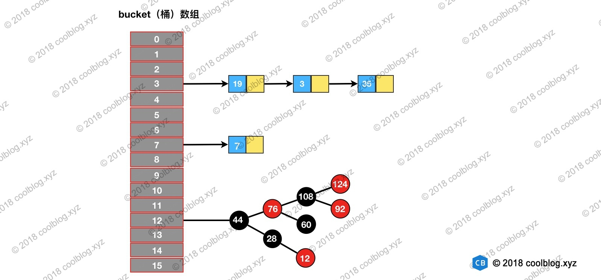
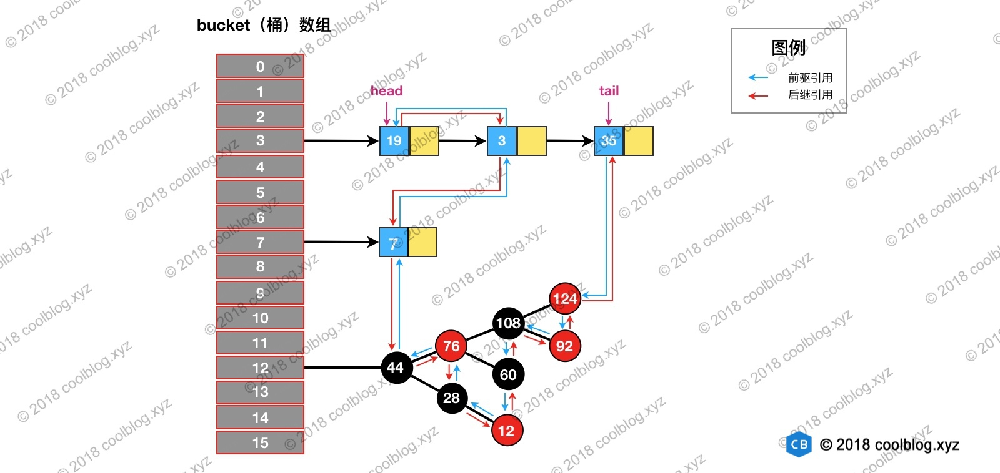
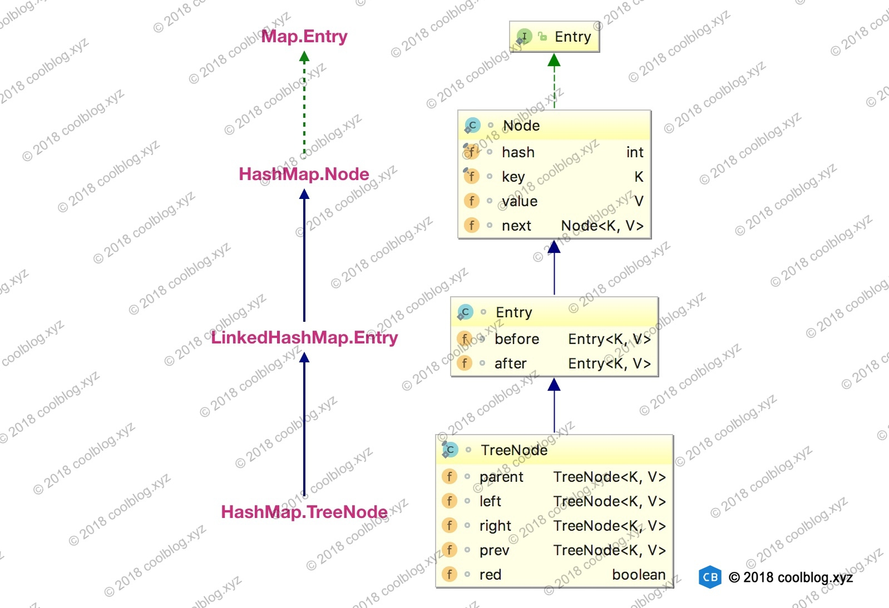
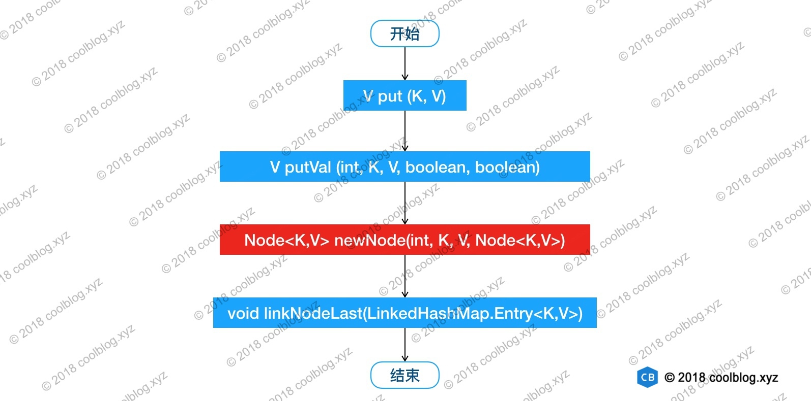
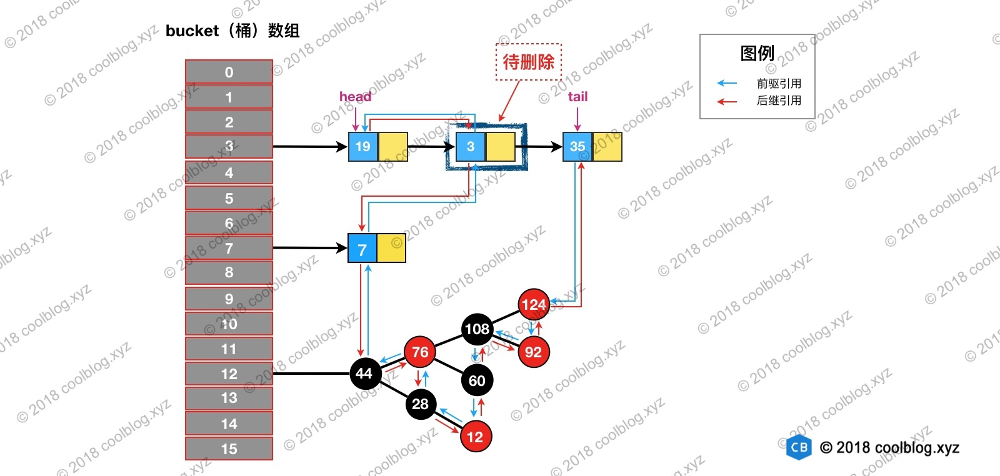
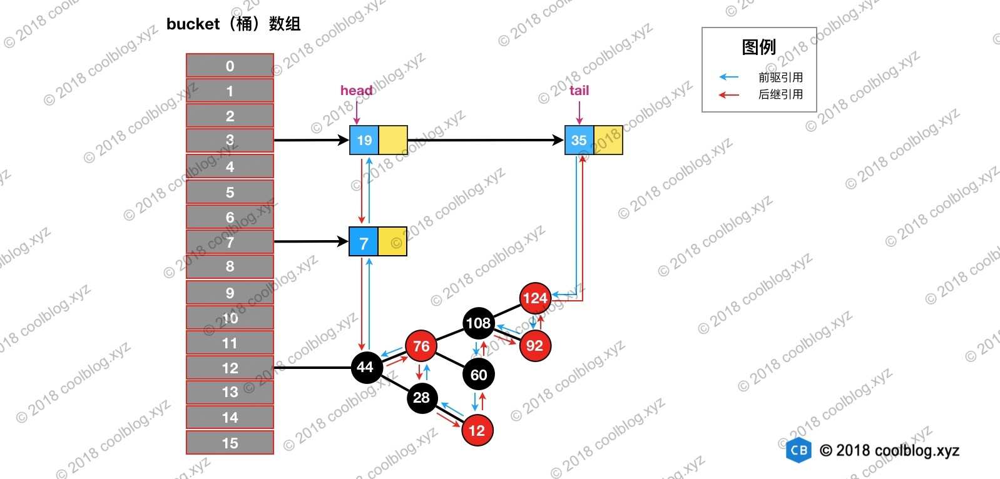
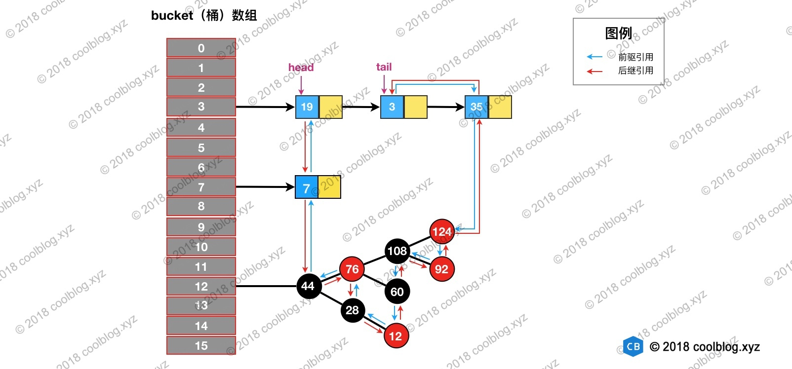
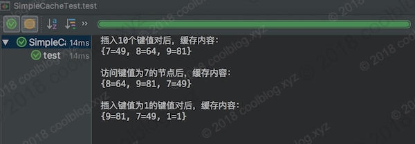

概述
LinkedHashMap 继承自 HashMap，在 HashMap 基础上，通过维护一条双向链表，解决了 HashMap 不能随时保持遍历顺序和插入顺序一致的问题。除此之外，LinkedHashMap 对访问顺序也提供了相关支持。在一些场景下，该特性很有用，比如缓存。在实现上，LinkedHashMap 很多方法直接继承自 HashMap，仅为维护双向链表覆写了部分方法。所以，要看懂 LinkedHashMap 的源码，需要先看懂 HashMap 的源码。关于 HashMap 的源码分析，本文并不打算展开讲了。大家可以参考我之前的一篇文章“HashMap 源码详细分析(JDK1.8)”。在那篇文章中，我配了十多张图帮助大家学习 HashMap 源码。
本篇文章的结构与我之前两篇关于 Java 集合类（集合框架）的源码分析文章不同，本文将不再分析集合类的基本操作（查找、遍历、插入、删除），而是把重点放在双向链表的维护上。包括链表的建立过程，删除节点的过程，以及访问顺序维护的过程等。好了，接下里开始分析吧。
原理
上一章说了 LinkedHashMap 继承自 HashMap，所以它的底层仍然是基于拉链式散列结构。该结构由数组和链表或红黑树组成，结构示意图大致如下：
]
LinkedHashMap 在上面结构的基础上，增加了一条双向链表，使得上面的结构可以保持键值对的插入顺序。同时通过对链表进行相应的操作，实现了访问顺序相关逻辑。其结构可能如下图：
]
上图中，淡蓝色的箭头表示前驱引用，红色箭头表示后继引用。每当有新键值对节点插入，新节点最终会接在 tail 引用指向的节点后面。而 tail 引用则会移动到新的节点上，这样一个双向链表就建立起来了。
上面的结构并不是很难理解，虽然引入了红黑树，导致结构看起来略为复杂了一些。但大家完全可以忽略红黑树，而只关注链表结构本身。好了，接下来进入细节分析吧。
源码分析
Entry 的继承体系
在对核心内容展开分析之前，这里先插队分析一下键值对节点的继承体系。先来看看继承体系结构图：

上面的继承体系乍一看还是有点复杂的，同时也有点让人迷惑。HashMap 的内部类 TreeNode 不继承它的了一个内部类 Node，却继承自 Node 的子类 LinkedHashMap 内部类 Entry。这里这样做是有一定原因的，这里先不说。先来简单说明一下上面的继承体系。LinkedHashMap 内部类 Entry 继承自 HashMap 内部类 Node，并新增了两个引用，分别是 before 和 after。这两个引用的用途不难理解，也就是用于维护双向链表。同时，TreeNode 继承 LinkedHashMap 的内部类 Entry 后，就具备了和其他 Entry 一起组成链表的能力。但是这里需要大家考虑一个问题。当我们使用 HashMap 时，TreeNode 并不需要具备组成链表能力。如果继承 LinkedHashMap 内部类 Entry ，TreeNode 就多了两个用不到的引用，这样做不是会浪费空间吗？简单说明一下这个问题（水平有限，不保证完全正确），这里这么做确实会浪费空间，但与 TreeNode 通过继承获取的组成链表的能力相比，这点浪费是值得的。在 HashMap 的设计思路注释中，有这样一段话：
Because TreeNodes are about twice the size of regular nodes, we
use them only when bins contain enough nodes to warrant use
(see TREEIFY_THRESHOLD). And when they become too small (due to
removal or resizing) they are converted back to plain bins. In
usages with well-distributed user hashCodes, tree bins are
rarely used.
大致的意思是 TreeNode 对象的大小约是普通 Node 对象的2倍，我们仅在桶（bin）中包含足够多的节点时再使用。当桶中的节点数量变少时（取决于删除和扩容），TreeNode 会被转成 Node。当用户实现的 hashCode 方法具有良好分布性时，树类型的桶将会很少被使用。
通过上面的注释，我们可以了解到。一般情况下，只要 hashCode 的实现不糟糕，Node 组成的链表很少会被转成由 TreeNode 组成的红黑树。也就是说 TreeNode 使用的并不多，浪费那点空间是可接受的。假如 TreeNode 机制继承自 Node 类，那么它要想具备组成链表的能力，就需要 Node 去继承 LinkedHashMap 的内部类 Entry。这个时候就得不偿失了，浪费很多空间去获取不一定用得到的能力。
说到这里，大家应该能明白节点类型的继承体系了。这里单独拿出来说一下，为下面的分析做铺垫。叙述略为啰嗦，见谅。
链表的建立过程
链表的建立过程是在插入键值对节点时开始的，初始情况下，让 LinkedHashMap 的 head 和 tail 引用同时指向新节点，链表就算建立起来了。随后不断有新节点插入，通过将新节点接在 tail 引用指向节点的后面，即可实现链表的更新。
Map 类型的集合类是通过 put(K,V) 方法插入键值对，LinkedHashMap 本身并没有覆写父类的 put 方法，而是直接使用了父类的实现。但在 HashMap 中，put 方法插入的是 HashMap 内部类 Node 类型的节点，该类型的节点并不具备与 LinkedHashMap 内部类 Entry 及其子类型节点组成链表的能力。那么，LinkedHashMap 是怎样建立链表的呢？在展开说明之前，我们先看一下 LinkedHashMap 插入操作相关的代码：
1 | // HashMap 中实现 |
上面就是 LinkedHashMap 插入相关的源码，这里省略了部分非关键的代码。我根据上面的代码，可以知道 LinkedHashMap 插入操作的调用过程。如下：

我把 newNode 方法红色背景标注了出来，这一步比较关键。LinkedHashMap 覆写了该方法。在这个方法中，LinkedHashMap 创建了 Entry，并通过 linkNodeLast 方法将 Entry 接在双向链表的尾部，实现了双向链表的建立。双向链表建立之后，我们就可以按照插入顺序去遍历 LinkedHashMap，大家可以自己写点测试代码验证一下插入顺序。
以上就是 LinkedHashMap 维护插入顺序的相关分析。本节的最后，再额外补充一些东西。大家如果仔细看上面的代码的话，会发现有两个以after开头方法，在上文中没有被提及。在 JDK 1.8 HashMap 的源码中，相关的方法有3个：
1 | // Callbacks to allow LinkedHashMap post-actions |
根据这三个方法的注释可以看出，这些方法的用途是在增删查等操作后，通过回调的方式，让 LinkedHashMap 有机会做一些后置操作。上述三个方法的具体实现在 LinkedHashMap 中，本节先不分析这些实现，相关分析会在后续章节中进行。
链表节点的删除过程
与插入操作一样，LinkedHashMap 删除操作相关的代码也是直接用父类的实现。在删除节点时，父类的删除逻辑并不会修复 LinkedHashMap 所维护的双向链表，这不是它的职责。那么删除及节点后，被删除的节点该如何从双链表中移除呢？当然，办法还算是有的。上一节最后提到 HashMap 中三个回调方法运行 LinkedHashMap 对一些操作做出响应。所以，在删除节点后，回调方法 afterNodeRemoval 会被调用。LinkedHashMap 覆写该方法，并在该方法中完成了移除被删除节点的操作。相关源码如下：
1 | // HashMap 中实现 |
删除的过程并不复杂，上面这么多代码其实就做了三件事：
- 根据 hash 定位到桶位置
- 遍历链表或调用红黑树相关的删除方法
- 从 LinkedHashMap 维护的双链表中移除要删除的节点
举个例子说明一下，假如我们要删除下图键值为 3 的节点。

根据 hash 定位到该节点属于3号桶，然后在对3号桶保存的单链表进行遍历。找到要删除的节点后，先从单链表中移除该节点。如下：

然后再双向链表中移除该节点：

删除及相关修复过程并不复杂，结合上面的图片，大家应该很容易就能理解，这里就不多说了。
访问顺序的维护过程
前面说了插入顺序的实现，本节来讲讲访问顺序。默认情况下，LinkedHashMap 是按插入顺序维护链表。不过我们可以在初始化 LinkedHashMap，指定 accessOrder 参数为 true，即可让它按访问顺序维护链表。访问顺序的原理上并不复杂，当我们调用get/getOrDefault/replace等方法时，只需要将这些方法访问的节点移动到链表的尾部即可。相应的源码如下：
1 | // LinkedHashMap 中覆写 |
上面就是访问顺序的实现代码，并不复杂。下面举例演示一下，帮助大家理解。假设我们访问下图键值为3的节点，访问前结构为：

访问后，键值为3的节点将会被移动到双向链表的最后位置，其前驱和后继也会跟着更新。访问后的结构如下：

基于 LinkedHashMap 实现缓存
前面介绍了 LinkedHashMap 是如何维护插入和访问顺序的，大家对 LinkedHashMap 的原理应该有了一定的认识。本节我们来写一些代码实践一下，这里通过继承 LinkedHashMap 实现了一个简单的 LRU 策略的缓存。在写代码之前，先介绍一下前置知识。
在3.1节分析链表建立过程时，我故意忽略了部分源码分析。本节就把忽略的部分补上，先看源码吧：
1 | void afterNodeInsertion(boolean evict) { // possibly remove eldest |
上面的源码的核心逻辑在一般情况下都不会被执行，所以之前并没有进行分析。上面的代码做的事情比较简单，就是通过一些条件，判断是否移除最近最少被访问的节点。看到这里，大家应该知道上面两个方法的用途了。当我们基于 LinkedHashMap 实现缓存时，通过覆写removeEldestEntry方法可以实现自定义策略的 LRU 缓存。比如我们可以根据节点数量判断是否移除最近最少被访问的节点，或者根据节点的存活时间判断是否移除该节点等。本节所实现的缓存是基于判断节点数量是否超限的策略。在构造缓存对象时，传入最大节点数。当插入的节点数超过最大节点数时，移除最近最少被访问的节点。实现代码如下：
1 | public class SimpleCache<K, V> extends LinkedHashMap<K, V> { |
测试代码如下：
1 | public class SimpleCacheTest { |
测试结果如下：

在测试代码中，设定缓存大小为3。在向缓存中插入10个键值对后，只有最后3个被保存下来了，其他的都被移除了。然后通过访问键值为7的节点，使得该节点被移到双向链表的最后位置。当我们再次插入一个键值对时，键值为7的节点就不会被移除。
本节作为对前面内的补充，简单介绍了 LinkedHashMap 在其他方面的应用。本节内容及相关代码并不难理解，这里就不在赘述了。
总结
本文从 LinkedHashMap 维护双向链表的角度对 LinkedHashMap 的源码进行了分析，并在文章的结尾基于 LinkedHashMap 实现了一个简单的 Cache。在日常开发中，LinkedHashMap 的使用频率虽不及 HashMap，但它也个重要的实现。在 Java 集合框架中，HashMap、LinkedHashMap 和 TreeMap 三个映射类基于不同的数据结构，并实现了不同的功能。HashMap 底层基于拉链式的散列结构，并在 JDK 1.8 中引入红黑树优化过长链表的问题。基于这样结构，HashMap 可提供高效的增删改查操作。LinkedHashMap 在其之上，通过维护一条双向链表，实现了散列数据结构的有序遍历。TreeMap 底层基于红黑树实现，利用红黑树的性质，实现了键值对排序功能。
到此，本篇文章就写完了，感谢大家的阅读！